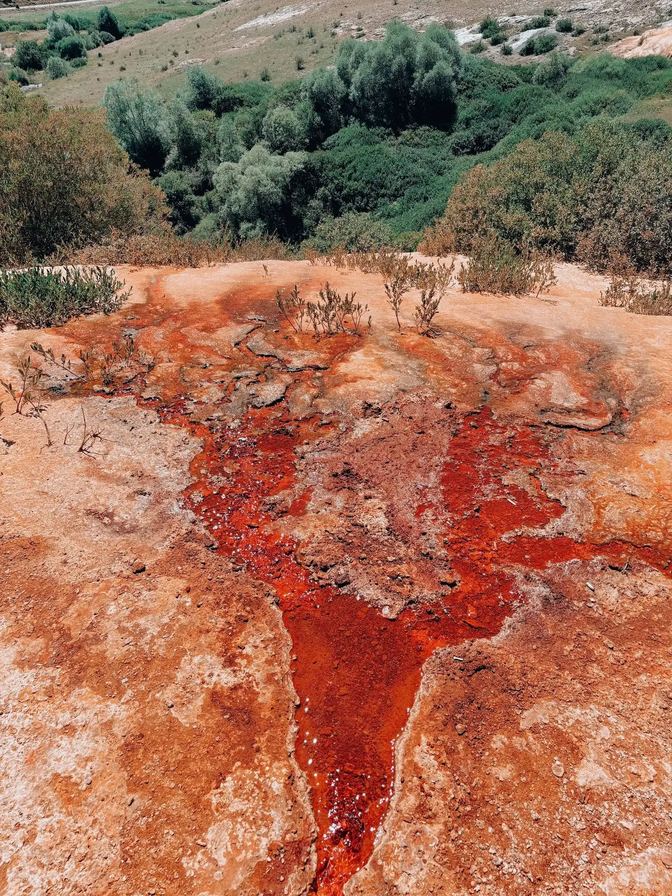
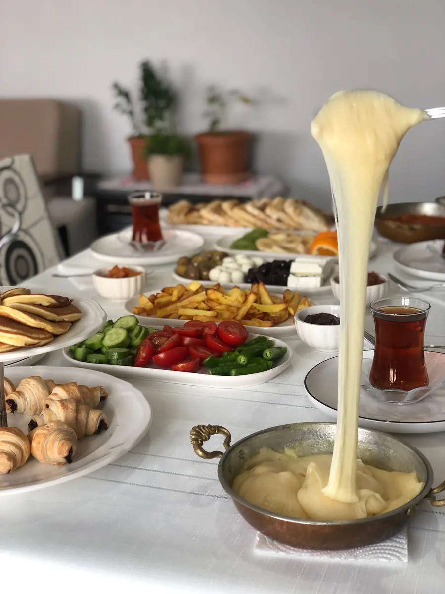
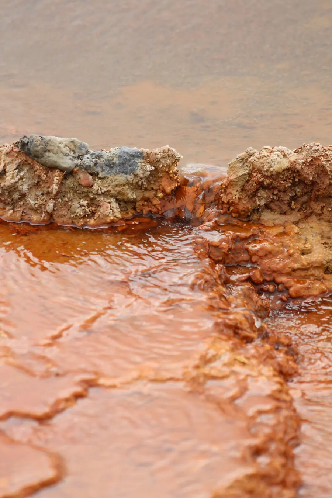
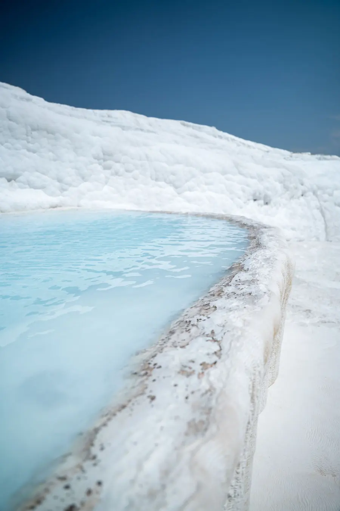

Kırmızı suyun başında, sakin bir ev.
Çavdar Thermal, Karahayıt'ta küçük bir konaklama. Sabah sofrası, termal suyun sakinliği ve Pamukkale'ye yakınlık. Oda için arayın ya da WhatsApp'tan yazın.
Belediye Cd. No:19, Karahayıt, Pamukkale / Denizli

Büyük otel gürültüsü yok.
Çavdar Thermal, Karahayıt'ta Belediye Caddesi üzerinde küçük ölçekli bir konaklama. Misafir notlarında en sık öne çıkan iki şey: sabah kahvaltısı ve işletme sahibinin ilgisi.
Kızıl su, beyaz teraslar, ve geceyi sessiz geçirebileceğiniz bir oda.
- KonumKarahayıt, Pamukkale. Kırmızı su ile bilinen mahalle; Pamukkale travertenleri de aynı bölgede.
- SofraKahvaltı, misafirlerin en sık andığı şeylerden biri. Menü ve saatler sizden alınıp eklenir.
- SuKarahayıt termal suyu ile tanınır; otelin kendi olanakları sizinle netleştirilip yazılır.
- İletişimAracı olmadan, doğrudan telefon ya da WhatsApp ile otele ulaşın.

Fotoğraf temsilîdirGüne sofradan başlanır.
Karahayıt'ta bir sabah, uzun bir kahvaltı ve demli çayla açılır. Misafirler kahvaltıyı övüyor; sizin sofranızı ise kendi fotoğraflarınızla ve kendi sözlerinizle göstereceğiz.
Karahayıt'ın kırmızı suyu.
Karahayıt, kaynaklardan çıkan demir oksitli suyun yer yer kırmızı-turuncu bıraktığı terasları ile bilinir. Pamukkale'nin beyaz travertenleri ise aynı bölgede, tam tersi bir manzara sunar. Genel coğrafi bilgidir; ziyaret koşullarını gitmeden teyit etmenizi öneririz.


Karahayıt'ta buluşalım.
Belediye Cd. No:19, Karahayıt, Pamukkale / Denizli. Yolu bulamazsanız arayın; tarif telefonda verilir.
- 0532 559 39 36AraWhatsApp
- HaritaYol tarifi al